PUCPR 2020–2024: análise de mercado, competição e portfólio
Uma leitura estratégica do Censo da Educação Superior: onde a PUCPR cresceu, onde ganhou ou perdeu posição e quais perguntas o dado público permite formular.
Relatório interativo e relatório analítico
Abrir relatório no Power BI (tela cheia) Relatório analítico (PDF, 26 páginas)
Relatório interativo com dados públicos do INEP; navegue pelas páginas com as setas no rodapé do relatório. Em telas pequenas, recomenda-se abrir em tela cheia ou no desktop.
O relatório analítico em PDF é o documento executivo que acompanha o dashboard: 12 seções, 12 figuras e 5 tabelas, escrito na sequência fato → evidência → interpretação → implicação → cautela, com todas as reconciliações numéricas no capítulo de método. Todos os números foram conferidos contra o modelo DAX.
Problema de negócio
Entre 2020 e 2024 a PUCPR passou de 23.130 para 29.041 matrículas de graduação (+25,6%). A frase é verdadeira e, sozinha, descreve mal a instituição. A pergunta que orientou o projeto foi: como a PUCPR está posicionada no mercado de ensino superior — em volume, share, portfólio, financiamento e perfil do aluno — frente a Curitiba, ao Paraná e ao Brasil, e o que essa posição implica para decisões de portfólio e de defesa de mercado?
O caso foi construído do ponto de vista de uma diretoria de planejamento e estratégia: separar as histórias que o número agregado mistura (modalidade, geografia, mercado, portfólio e posição competitiva) e chegar a uma agenda de questões localizadas, cada uma sustentada por um fato observável.
Contexto
O ensino superior brasileiro viveu, no período, dois movimentos opostos: o presencial recuou 9,6% (5,58 para 5,04 milhões de matrículas) e o EAD cresceu 67% (3,11 para 5,19 milhões). No Paraná, o presencial caiu 6,9%; em Curitiba, o mercado presencial encolheu 0,9%, com a rede pública crescendo 9,9% e a privada recuando 5,4%. Nesse cenário, "crescer no presencial" significa, na prática, ganhar posição num mercado que não cresce.
O Censo da Educação Superior é a única base que compara todas as instituições do país na mesma régua. É declaratória e agregada por curso, instituição e município — o que define tanto seu valor (comparabilidade universal) quanto seus limites (não há preço, receita, coortes ou trajetórias de alunos).
Fontes de dados
| Fonte | Conteúdo | Acesso |
|---|---|---|
| INEP — Censo da Educação Superior, microdados de cursos (2020–2024) | Matrículas, ingressantes, concluintes, vagas, inscritos, financiamento (ProUni, FIES), perfil etário, turno, forma de ingresso, cor/raça — por curso × instituição × município × ano (≈2,75 milhões de linhas) | Público |
| INEP — Censo da Educação Superior, microdados de instituições (2020–2024) | Categoria administrativa, organização acadêmica, rede pública/privada | Público |
| Tabela de marcas (construída no projeto) | 2.945 códigos de instituição mapeados para marcas consolidadas (grupos como Positivo, UniCuritiba e Cesumar operam com mais de um código) | Derivada |
Nenhum dado confidencial. Todo o projeto usa exclusivamente dados públicos; a PUCPR não participou nem encomendou o trabalho.
Ferramentas utilizadas
- Python (pandas, DuckDB) — leitura e padronização dos microdados brutos (164 colunas por ano), auditoria de consistência, análise exploratória e geração das tabelas analíticas importadas pelo BI.
- Power BI — modelo tabular em esquema estrela com ~180 medidas DAX; relatório autorado em formato PBIP/PBIR (JSON versionável), com validação estrutural por CLI e conferência de 32 âncoras numéricas contra o motor DAX.
- Excel — validação cruzada de totais contra as sinopses estatísticas oficiais.
Metodologia
- Definição das perguntas e das réguas de leitura. Brasil, Paraná e Curitiba como referências; presencial e EAD sempre separados; Curitiba definida pelo município do curso, não pela sede da instituição.
- Harmonização. Rótulos de curso que mudam entre anos foram fundidos num rótulo único (sem isso, Engenharia de computação apareceria como um curso em alta e outro em queda). Instituições consolidadas por marca.
- Cortes de materialidade para evitar variações extremas sobre bases pequenas: marcas com ≥1.500 matrículas, cursos com mercado ≥400 e PUCPR ≥100, pressão de demanda em cursos com ≥800 matrículas no estado. Os cortes definem o universo; o que é exibido é um subconjunto, e reduzir o exibido não altera nenhum cálculo.
- Tratamento explícito dos problemas de dado (série de inscritos quebrada em 2022, pico isolado de FIES em 2021, mecanismos de financiamento sobrepostos, alta não declaração de cor/raça) — cada um documentado numa página própria do relatório.
- Decomposição do crescimento como identidade contábil: Δ matrículas = efeito mercado (exposição a cursos que cresceram) + expansão do portfólio (cursos novos) + efeito posição (variação de share dentro dos cursos existentes).
- Sinais antecedentes: momentum (share de ingressantes − share de matrículas) e similaridade de portfólio entre marcas (cosseno), tratados como indicação, nunca como previsão.
- Regra editorial: todo percentual acompanhado do denominador; nenhuma linguagem causal ("migração", "roubou alunos", "evasão") — o Censo não a sustenta.
Principais análises
- Reconciliação institucional: 29.041 = 18.159 presencial + 10.882 EAD; +5.911 = −390 presencial + 6.301 EAD; campi (Curitiba, Londrina, Toledo, Maringá) somados um a um.
- Share em Curitiba presencial (mercado total e entre privadas), share de ingressantes, concentração (HHI e Top-5 por marca) e ranking de ganhos e perdas por marca.
- Ponte do crescimento em Curitiba: efeito mercado, expansão do portfólio e efeito posição, por curso e por marca.
- Batalha por curso: para cada curso estratégico, quem ficou com a expansão do mercado e o que aconteceu com a posição da PUCPR.
- Momentum por curso e por marca; radar de mercados sem oferta da PUCPR; pressão de demanda (inscritos ÷ vagas) no benchmark externo.
- EAD: decomposição do crescimento dos cinco cursos motores contra o mercado nacional e contra os polos do Paraná.
- Financiamento (ProUni, FIES, total financiado) e perfil do aluno (idade, turno, forma de ingresso, cor/raça) contra três benchmarks ex-PUCPR.
Principais insights
- Mais de 100% do crescimento líquido veio do EAD. O EAD foi de 4.581 para 10.882 matrículas (+6.301); o presencial, somados todos os campi, recuou de 18.549 para 18.159 (−390), sobretudo pelo encerramento de Maringá (−841).
- Em Curitiba a PUCPR cresceu e ganhou share, mas não por fortalecimento dentro dos cursos. +476 matrículas num mercado que encolheu 0,9%; share de 13,6% para 14,2%. A decomposição muda a leitura: +476 = +686 de efeito mercado + 468 de cursos novos − 678 de efeito posição nos cursos em que já competia.
- Entre as privadas, o avanço foi três vezes maior: share de 19,3% para 21,0% (+1,8 p.p.), porque a rede pública cresceu 9,9% enquanto a privada recuou 5,4%. O share de ingressantes (14,9%) acima do share de estoque (14,2%) é um sinal antecedente potencial.
- A Positivo emerge como benchmark competitivo de portfólio: similaridade 0,83 com a PUCPR, maior momentum de entrada do mercado (+4,0 p.p. contra +0,7) e maior ganho de posição em Odontologia e Ciência da computação.
- O portfólio presencial tem nomes. Fortalezas: Ciência da computação e Design (ganho de posição +131 e +114). Tensões: Psicologia, Odontologia e Medicina (efeito posição −448, −155 e −82 em mercados em forte crescimento). Caso especial: Engenharia de software — mercado +799%, PUCPR ainda 1ª marca (37,9%), mas share −7,4 p.p. numa expansão pulverizada por entrantes. Espaço em branco: Biomedicina (+80%, 14 marcas, sem oferta da PUCPR).
- No EAD a PUCPR ganhou posição, não só acompanhou o mercado. Cinco cursos respondem por 4.812 das 6.301 matrículas adicionais (76%); decompostos, são +1.717 de efeito mercado e +3.095 de efeito posição.
- Acesso é diferencial estrutural: 22,5% das matrículas presenciais no ProUni, contra 8,4% no privado de Curitiba ex-PUCPR e 9,0% no privado do Paraná; aluno mais jovem (83,7% até 24 anos) e mais diurno (26,2% no noturno contra 62,4% no benchmark).
O dashboard (11 páginas)
O relatório segue uma narrativa: síntese → mercado → posição competitiva → de onde veio o crescimento → batalha por curso → momentum → portfólio → EAD → financiamento → perfil → método. Cada página tem uma pergunta no título e uma leitura curta no rodapé, com as cautelas correspondentes.
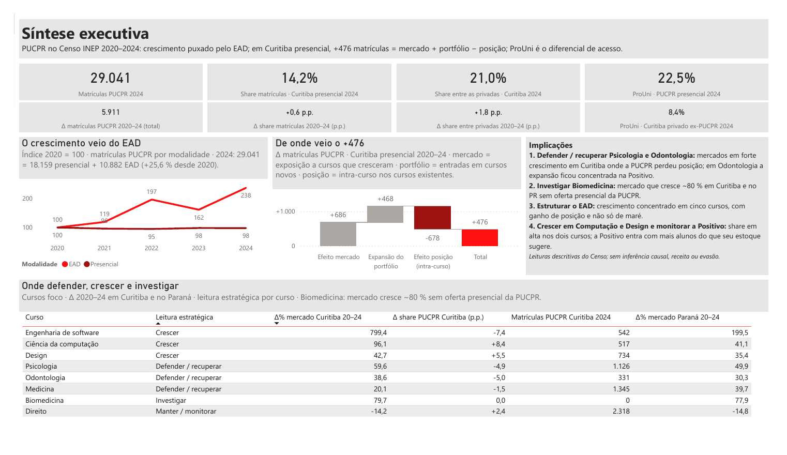
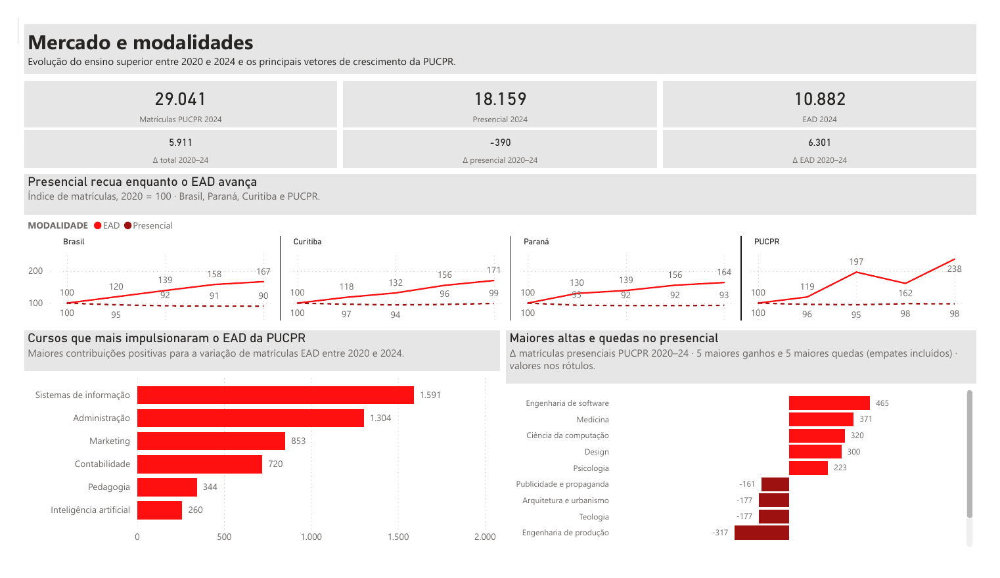
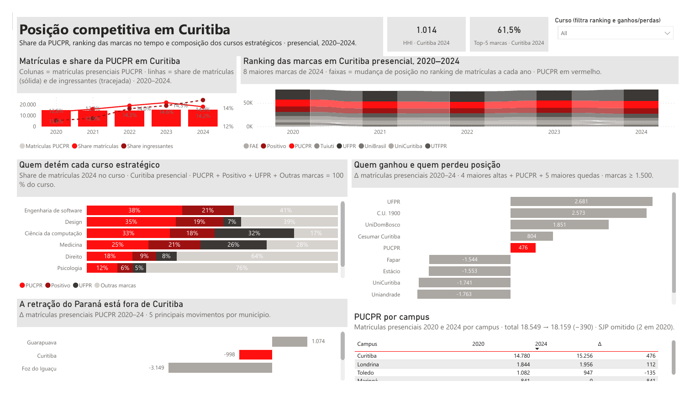
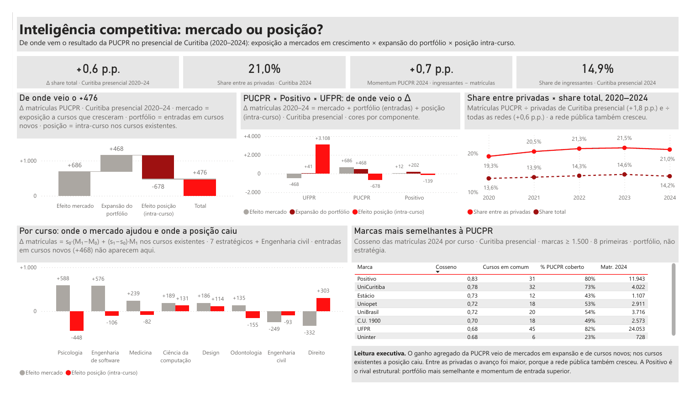
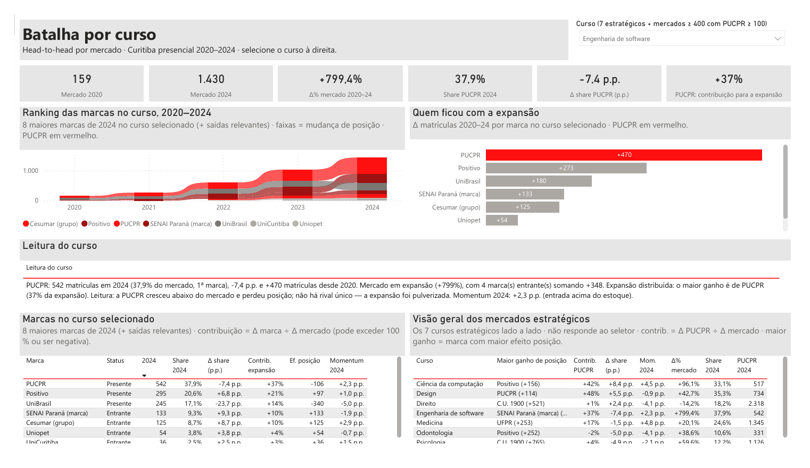
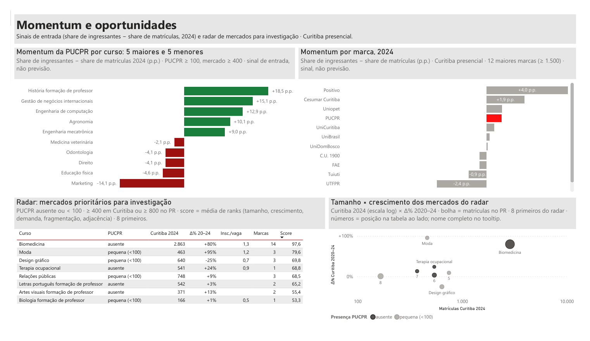
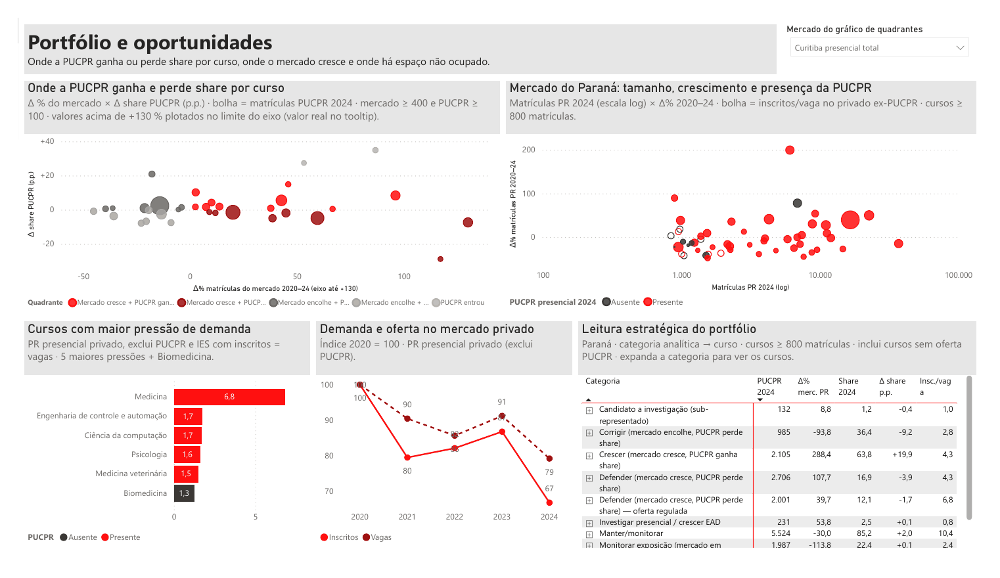
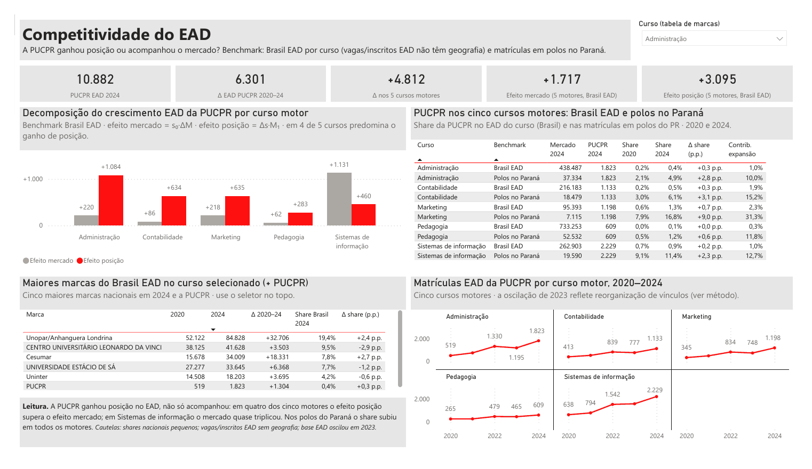
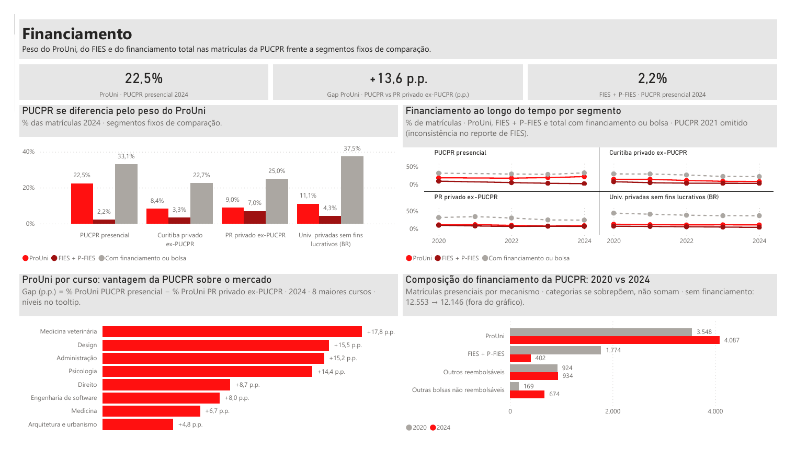
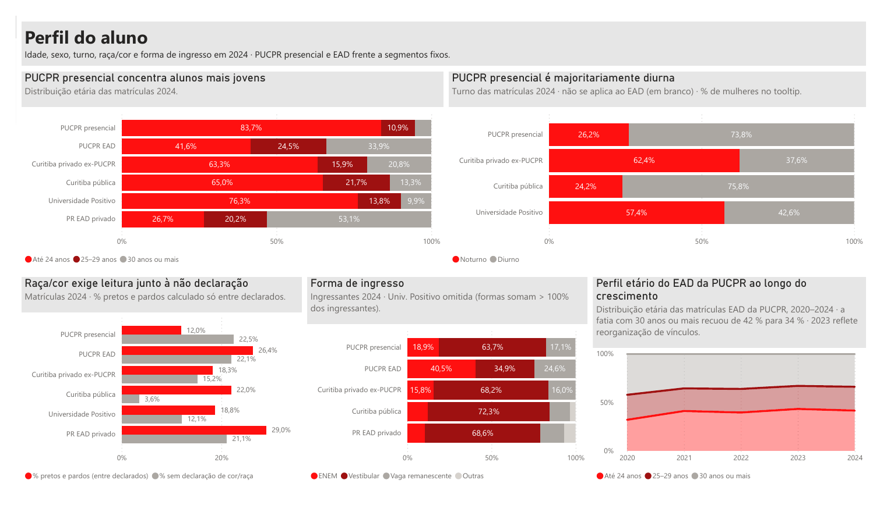
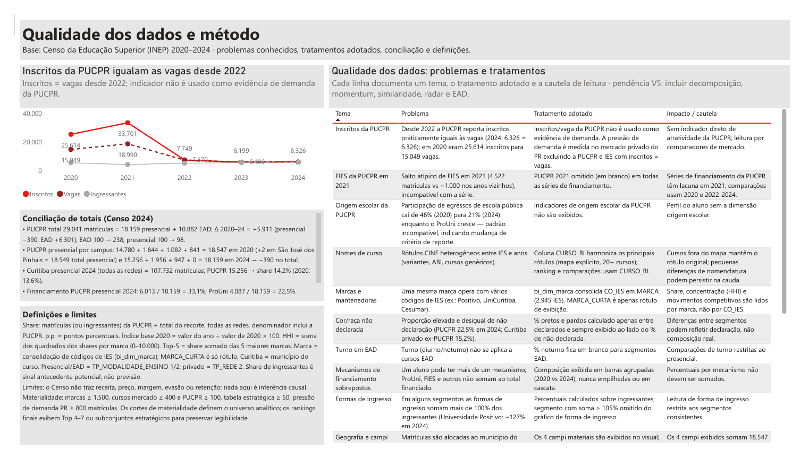
Limitações
- O dado é agregado e declaratório. Não há registro individual, coortes, transferências ou evasão: uma queda de matrículas pode ser formatura, encerramento de oferta ou mudança de reporte, e o Censo não distingue. Nenhuma afirmação causal é possível.
- Não há preço, receita, margem ou custo. "Mercado atrativo" é leitura de crescimento e demanda, nunca de viabilidade. O radar de oportunidades é triagem, não recomendação de abertura.
- Quebras de série tratadas, não resolvidas: inscritos da PUCPR iguais às vagas desde 2022 (indicador não usado como demanda); FIES de 2021 com pico isolado (exibido como lacuna); origem escolar inconsistente (descartada); oscilação da base EAD em 2023 sem causa determinável.
- EAD sem geografia para vagas e inscritos — os indicadores de demanda são presenciais.
- Momentum e similaridade são sinais, não previsões; a decomposição do crescimento é uma identidade contábil, não uma atribuição de causa.
- Defasagem de cerca de um ano entre o ano de referência e a publicação do Censo.
Conclusão e recomendação
A PUCPR termina 2024 maior do que começou 2020 por dois caminhos: um EAD que mais que dobrou ganhando posição em seus cursos motores, e um presencial que recuou no conjunto dos campi enquanto crescia em Curitiba — por exposição a mercados que cresceram e por cursos novos, apesar de perda de posição relativa no agregado dos cursos em que já competia. O Censo não explica sozinho por que uma instituição ganha ou perde posição, mas mostra com precisão onde as perguntas estratégicas devem ser feitas.
A agenda que emerge é localizada:
- Defender / recuperar — Psicologia (maior vazamento de posição, −448, num mercado +60%) e Odontologia (−155, com a Positivo à frente da expansão). Medicina: monitorar, sob oferta regulada.
- Crescer — sustentar Ciência da computação e Design e entender o mecanismo antes de exigi-lo de outros cursos; em Engenharia de software, acompanhar um mercado que cresceu quase 800% em quatro anos.
- Investigar — Biomedicina como business case (preço, margem, capacidade, regulação, demanda proprietária), não como conclusão.
- Monitorar — a Positivo como benchmark de portfólio e a concentração dos motores do EAD, curso a curso.
- Estruturar — separar sempre a discussão institucional (−390) da discussão de Curitiba (+476), e construir a camada de inteligência proprietária que o Censo não contém: motivos de escolha, coortes de permanência e conversão, monitoramento estruturado da concorrência local.